Sotheby's Hong Kong · 2022年12月6日
蘇富比 Buy Now 網上平台即將拓展至亞洲地區，並以為期兩週的手袋及配飾展覽拉開序幕。屆時將呈獻超過四十個珍貴手袋，引領大家走向購藏奢華精品的嶄新體驗。
為慶祝蘇富比全球奢侈品交易平台 Buy Now 登陸亞洲，蘇富比將於12月3至16日舉行為期兩週的展覽「Sotheby's En Route」，選址位於中環尊尚地段的太平行，展出包括愛馬仕稀有名包及香奈兒 CC In Love 心形垂蓋手袋等四十多個珍貴手袋，並讓客人即時選購，實為本季不容錯過的城中盛事。
蘇富比為配合收藏趨向多元化的全新時代，以 Buy Now 平台實現在亞洲擴展的策略，回應一眾藏家日益成熟的收藏習慣，為新一代藏家帶來嶄新的收藏體驗，協助藏家購藏和出售全球各地最炙手可熱的珍貴藝術品和奢侈品。
今次展覽內容豐富，蘇富比特意從中挑選了幾款收藏級手袋，解釋它們何以讓人一見傾心。
柏金包
愛馬仕柏金包為獨立女性設計，梯形設計大膽創新，功能實用，集精緻與優雅於一身，永不過時。
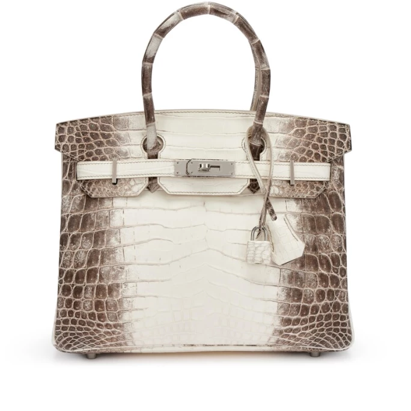
與喜馬拉雅山脈一樣，愛馬仕的喜馬拉雅包在手袋界的地位同樣首屈一指。袋身的色調由細緻的白色層層漸變成灰色，就似白雪皚皚的山峰，讓人聯想到世界上海拔最高的雄偉山脈。愛馬仕的漸變染色工藝超卓，每個手袋的漸變色皆獨一無二，是人人夢寐以求的精品，在包包愛好者心目中的地位堪比聖杯。
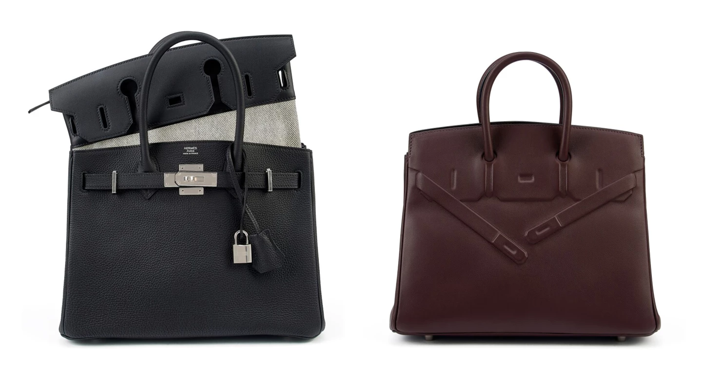
顧名思義，三合一柏金包有三種用法。除了經典的柏金包造型，分拆後還可以分別變成輕便的手拿包和大手提袋。
影子柏金包看似低調卻充滿新意。最初的款式由尚・保羅・高緹耶（Jean-Paul Gaultier）在2009年推出，21年後再以較小的尺寸重新亮相。高緹耶以壓花的形式將垂蓋和皮帶印在皮革表面，營造出錯視效果，玩味十足，令影子柏金包成為唯一在結構上有別於傳統柏金包的款式。高緹耶以現代方式演繹經典，在品牌發展史上留下深刻的印記。
凱莉包
凱莉包是愛馬仕的另一個長青款式。它在1935年以公事包的形象推出，後來之所以命名為凱莉包，是因為影后兼摩納哥王妃格蕾絲・凱莉（Grace Kelly）懷孕時為了阻擋狗仔隊的鏡頭，以手袋遮掩隆起的小腹。這一幕被記者記錄下來，凱莉包旋即風靡全球。每個凱莉包均包含680根手工縫製的針腳、36塊皮革和16顆窩釘，配上標誌性的鑰匙套、鎖頭和鑰匙，製作過程需要18至25小時。
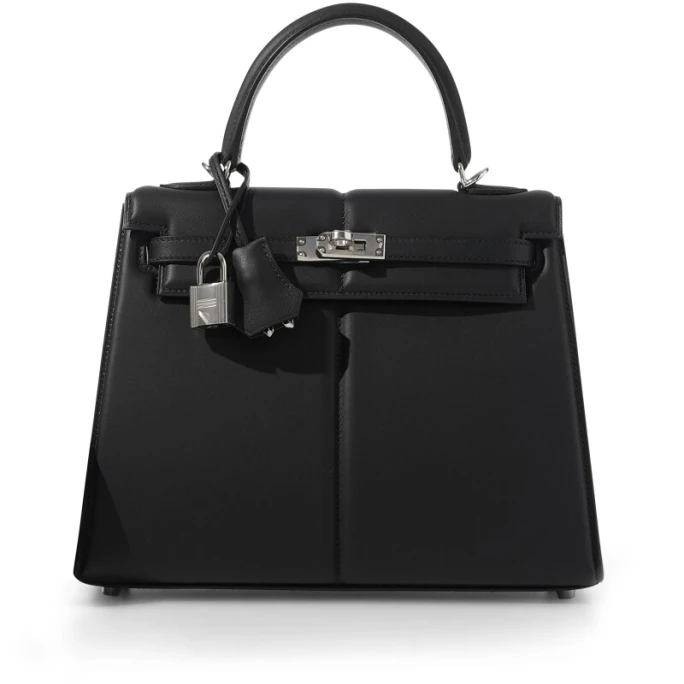
限量版 Padded Kelly 凱莉包的靈感源自汽車行業，特別是古董車的絎縫內飾。Padded Kelly 以品牌傳統的馬鞍針法（Saddle Stitching）縫製而成，皮革經凸紋和壓花處理，以凸顯凱莉包的輪廓，營造出柔軟豐盈的外觀。
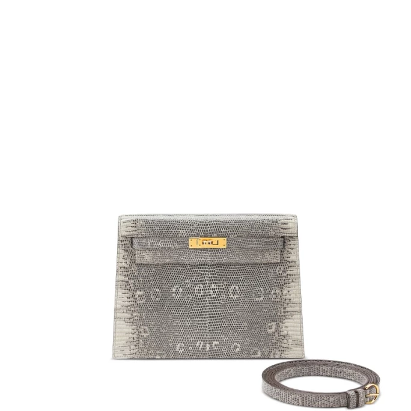
Kelly Danse 凱莉包的風格相對休閒，可作手拿包、斜背包、肩背包、腰包、手腕包或背包使用。Kelly Danse 二代在市場上非常罕見，越來越受愛馬仕藏家歡迎。這款手袋由尚・保羅・高緹耶設計，2008年面世，2013年停產，2019年重新推出。Kelly Danse 沒有拉鍊，非常輕便，纖薄的外形使它化身成完美的休閒凱莉包。
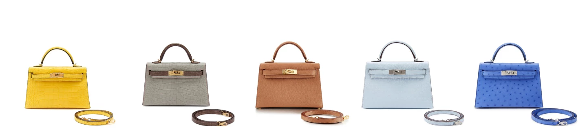
迷你包的風潮席捲時尚界，證明越大不等於越好，小巧玲瓏亦有其吸引之處。20公分的迷你凱莉包二代在2016年面世，設計簡約優雅，加入現代元素重新演繹永恆風尚，廣受藏家追捧。近年，擁有鮮豔熱帶色彩和啞光表面的手袋更是灸手可熱。愛馬仕對品質要求嚴格，他們從津巴布韋和澳洲等地嚴選最上乘的皮革，務求製作出充滿異國風情的手袋。2022年10月，蘇富比以超過150萬港元售出一個定製的珍珠灰色拼牛皮紙色啞光短吻鱷皮迷你凱莉包，成交價之高，直逼一向位居榜首的喜馬拉雅包。
In & Out
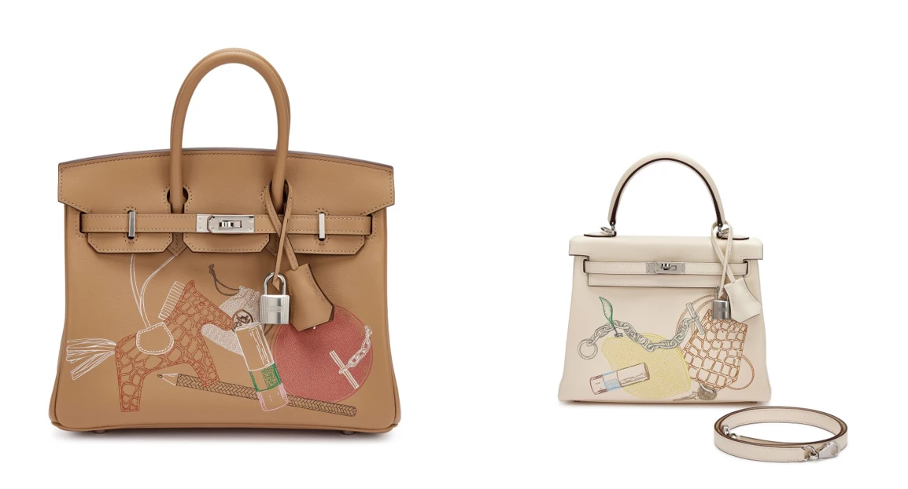
在2021年底問世，分柏金包和凱莉包兩種款式。設計靈感來自X光透視，讓人彷彿能一窺手袋裡的物品。手袋正面展示了一系列愛馬仕產品，包括經典的 Chaine d'Ancre 銀手鏈、以珍稀皮革製成的鑰匙套、Tutti Frutti 水果造型手拿包和唇膏。另外，In & Out 的包裝盒擁有海軍藍色的內籠，束帶防塵袋上也印有海軍藍色的愛馬仕標誌，是第一款採用這種配色的愛馬仕限量版手袋。
野餐包
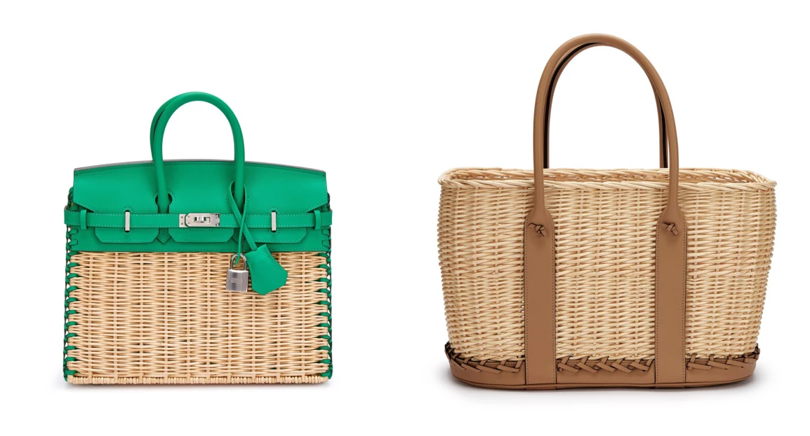
野餐包由柳條編織而成。製作過程由一位工匠負責處理皮革，另一位則專注編織袋身，是唯一需要兩位工藝精湛的匠人合作完成的款式。每根柳條都完整無缺，以編帶和打結的方法拼接 Swift 小牛皮，打造出別具匠心的 Picnic 野餐包。事實上，愛馬仕一直都在用柳條製作其他產品，不過尚・保羅・高緹耶在2011年才首次將這個元素引入手袋。柳編工藝推出十年後，Picnic 柏金包正式登場，在經典中織入新思。
Bolide
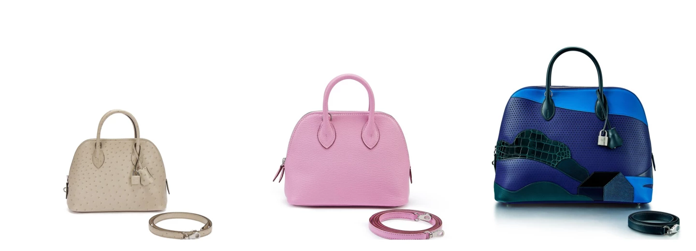
愛馬仕創始人蒂埃里・愛馬仕（Thierry Hermès）的孫兒埃米爾・莫里斯・愛馬仕（Emile-Maurice Hermès）在美國旅行時參觀了福特汽車廠，並接觸到拉鍊和相關機制。這次經歷啟發了他在1923年將拉鍊應用到愛馬仕皮具的製作中。Bolide 是史上第一款使用拉鍊的手袋，非常適用於旅行。
Picotin
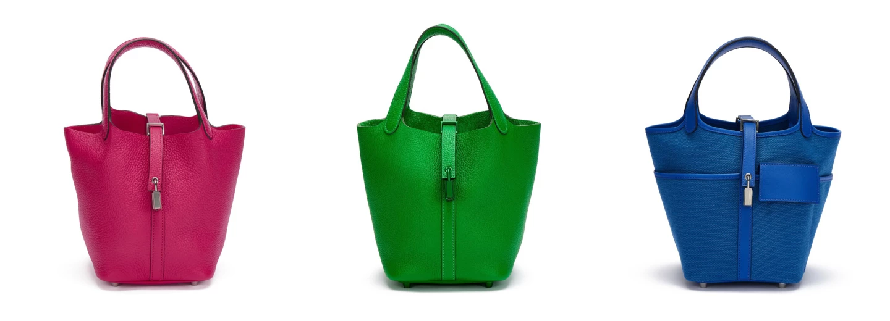
愛馬仕的 Picotin Lock 手提包可以說是一闕現代頌歌，呼應著品牌的馬術根源。2002年，愛馬仕推出以馬飼料袋為原型的水桶包，並將之名為「Picotin」（讀音「Pee-Co-Tuh」）。這個法語單字其實是一個容量單位，原意指每日分配给馬匹的燕麥份量。Picotin 因其簡單實用而著稱，適合四出奔波的忙碌生活。它的開口簡單，內部空間寬敞，是極簡主義者的良伴和最佳日用手袋。
香奈兒垂蓋手袋 | Chanel In Love Heart Belt Bag
2010年面世的香奈兒迷你垂蓋手袋在一眾經典垂蓋手袋中，迅速躋身為大熱款式。這款手袋可作單肩或斜背使用，正中當下迷你手袋的熱潮。
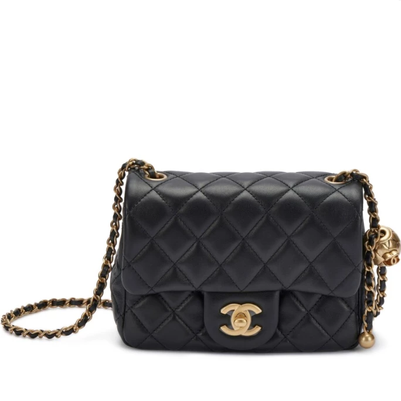
藏家對香奈兒的 CC In Love 無不傾心。最新款的迷你心形菱格紋垂蓋手袋在品牌2022年的春夏時裝秀上首度亮相，以經典的菱格紋小羊皮製成，正面垂蓋附有招牌CC轉鎖。香奈兒在1955年推出菱格紋，靈感來自騎師外套和香奈兒女士巴黎公寓裡的靠枕，一眼就能認出，是品牌芳華不衰的象徵。
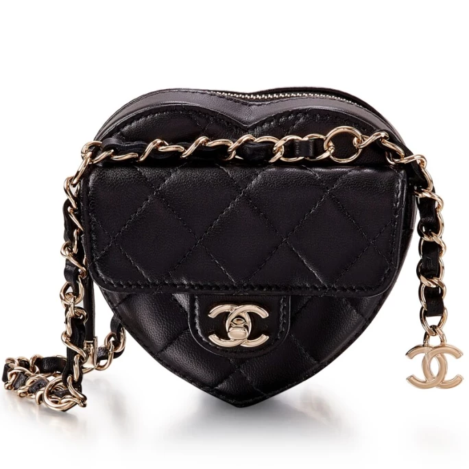